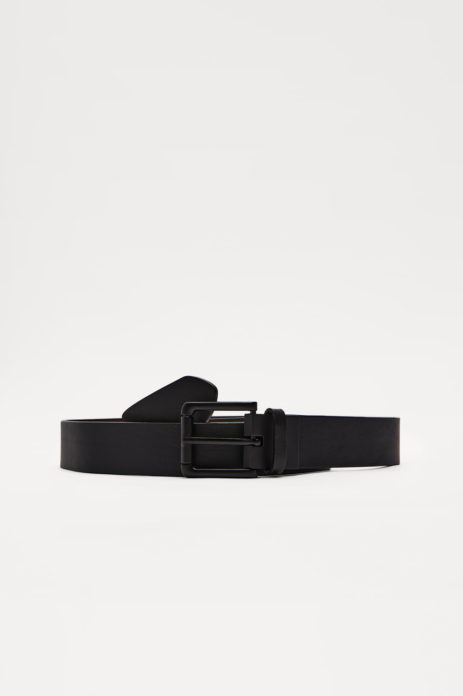
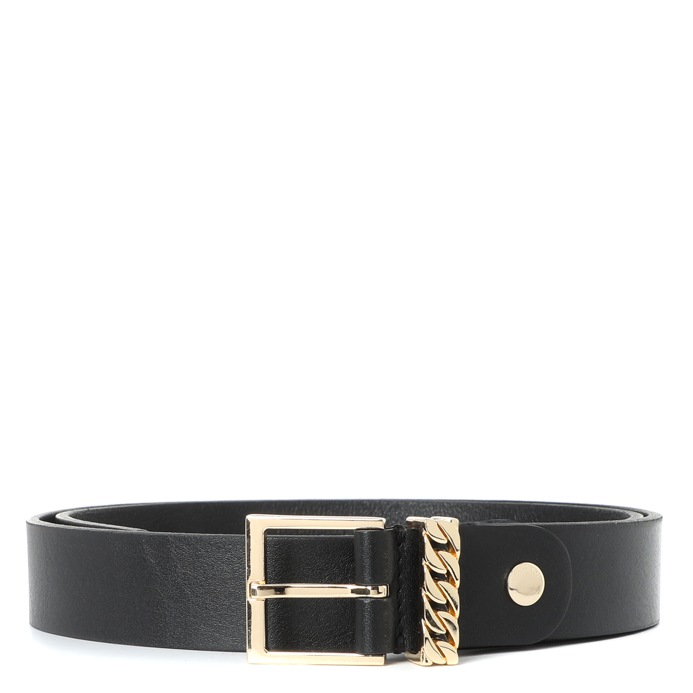

Двусторонний кожаный ремень
Состав: шерсть - 100%. Сезон: демисезон, зима.
Приобрести:
https://www.zara.com/ru/ru/двустороннии-кожаныи-ремень-p05919400.html
https://www.wildberries.ru/catalog/88074297/detail.aspx?targetUrl=GP
Приобрести: https://lichi.com/ru/ru/product/42562
Кожаный ремень с прямоугольной пряжкой
Натуральная кожа — это прочный, износостойкий, воздухопроницаемый и приятный на ощупь материал. Кожа эластична и немного растягивается при носке, принимая форму тела, что делает изделия из нее чрезвычайно удобными и надолго сохраняет их отличный внешний вид.
Приобрести: https://lichi.com/ru/ru/product/43645
Ремень Calzetti с золотистой фурнитурой
Ремень шириной 3 см из натуральной кожи с золотистым оттенком фурнитуры.
Приобрести: https://www.rendez-vous.ru/catalog/accessories/remen/calzetti_b_04fbu_r_chernyy-3109916/
Широкий кожаный ремень с прямоугольной пряжкой
Широкий кожаный ремень минималистичного дизайна с крупной пряжкой прямоугольной формы, а также дополнительной металлической шлевкой для более надежной фиксации.
Приобрести: https://lichi.com/ru/ru/product/42240
Широкий кожаный ремень с прямоугольной пряжкой
Широкий кожаный ремень минималистичного дизайна с крупной пряжкой прямоугольной формы, а также дополнительной металлической шлевкой для более надежной фиксации.

Приобрести: https://lichi.com/ru/ru/product/42239
Широкий ремень в ковбойском стиле
Красивый ремень шириной 3.7 см в ковбойском стиле из полиуретана.
Приобрести:
https://www.wildberries.ru/catalog/34889191/detail.aspx?targetUrl=GP